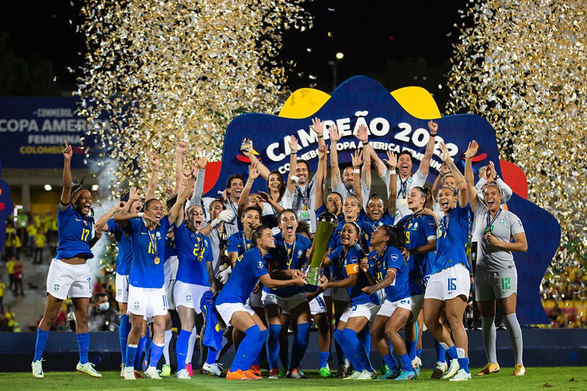
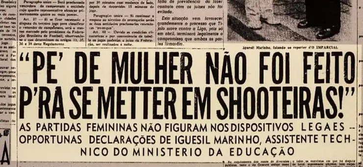
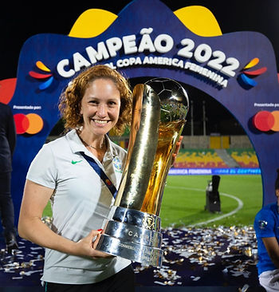

Da proibição ao pódio
Foto: Thais Magalhães / CBF
No dia 30 de agosto de 2022, a Seleção Brasileira de Futebol Feminino sagrou-se campeã e levantou a taça da Copa América vencendo a Colômbia por 1 x 0 na casa das adversárias. O campeonato organizado pela Conmebol (Confederação Sul-Americana de Futebol) está em sua 9ª Edição e foi disputado entre 10 países da América do Sul.
Com essa vitória, o Futebol de mulheres do Brasil confirma sua hegemonia na América do Sul, sendo octacampeão da competição. O desempenho da Seleção também garantiu as vagas para a Copa de 2023 e para os Jogos Olímpicos de 2024. E além desses grandes feitos, também temos outras razões para comemorar!
Essa foi a primeira vez que um time dirigido por uma treinadora mulher chegou ao lugar mais alto do pódio. Pia Sundhage, à frente da seleção desde 2019, é a primeira treinadora estrangeira a treinar a seleção. Sueca, teve muito destaque quando ainda jogava como meia-atacante, somando títulos em clubes, na seleção e prêmios individuais.
Assim como a grande maioria das pioneiras do futebol de mulheres, foi uma desbravadora. Quando criança, jogava com os meninos e não podia participar de jogos em torneios por ser menina. Como Pia queria muito jogar, o treinador sugeriu que fingissem que era um menino. E assim foi feito, Pia conseguiu jogar por 2 anos com o nome de Pelé Sundhage, até que fora descoberta (Confira a entrevista da Dibradoras em que Pia conta esse episódio)
Sua técnica, ousadia, determinação e ambição a levaram bem longe. Após a carreira de sucesso como jogadora, iniciou a carreira de técnica e continuou colecionando êxitos. Pia tem passagem pela seleção dos Estados Unidos, sendo bicampeã olímpica com elas em 2008 e 2012; foi também técnica de seleção sueca, participando de sua terceira final olímpica consecutiva, conquistando a medalha de prata no Rio 2016.
Com sua leitura visionária do futebol de mulheres, Pia foi quem pediu que a seleção tivesse o trabalho da Psicologia do Esporte em conjunto com as demais áreas de performance.
E com toda essa bagagem, Pia conquistou na Copa América 2022 o seu primeiro título oficial à frente da Seleção Brasileira após exatos 3 anos à frente da equipe e em sua primeira participação da Copa América.
E como se não bastassem tantos “pela primeira vez…”, temos mais pontos para essa lista! Foi a primeira campanha da seleção em que a equipe termina o campeonato sem sofrer nenhum gol. Lorena Silva, goleira de 25 anos (Grêmio), foi a primeira goleira da história a terminar o campeonato sem ceder nenhum gol.
Na campanha 2022, a Seleção Brasileira teve 100% de aproveitamento. Foram 6 jogos e 6 vitórias, totalizando 20 gols marcados e nenhum gol sofrido, com as artilheiras Debinha e Adriana somando 5 gols cada uma.
E esse sucesso vem junto à proposta de renovação. Do elenco brasileiro de 23 atletas, 18 eram estreantes no Campeonato. E para renovar é preciso coragem somada a confiança e apoio a quem está vindo. É nesse clima que o time foi construído: atletas jovens contando com o apoio de atletas experientes. Durante a Copa, Tamires e Debinha completaram 125 jogos representando a seleção brasileira e Bia Zaneratto atingiu sua centésima partida, sem contar a experiente goleira Luciana e a zagueira Rafaelle, ambas em sua segunda Copa América. (Clique aqui e conheça todo elenco em matéria da CBF).
Este foi o primeiro título conquistado pela Seleção, em mais de 30 anos, sem o célebre trio: Formiga, Marta e Cristiane. E a atual geração tem muito a agradecer essas mulheres e todas as demais responsáveis por todas as conquistas anteriores, dentro e fora dos campos, para que o elenco renovado possa continuar esse legado.
Afinal de contas não podemos esquecer que além das dificuldades esportivas, muitas mulheres precisaram ir contra a lei para conseguir jogar. Isso mesmo! Em 1941, Getúlio Vargas assinou um Decreto-lei 3199, no qual o artigo 54 dizia:
Às mulheres não se permitirá a prática de desportos incompatíveis com as condições de sua natureza, devendo, para este efeito, o Conselho Nacional de Desportos baixar as necessárias instruções às entidades desportivas do país.
Na época, o argumento baseava-se na suposição de que o futebol era uma modalidade muito violenta e masculina e que faria mal ao corpo das mulheres e a sua capacidade de ter filhos.

Jornal no museu do futebol em SP — Foto: arquivo
Em 1965, durante a Ditadura Militar, os esportes proibidos foram nomeados pelo Conselho Nacional de Desportos (CND): “lutas de qualquer natureza, futebol, futebol de salão, futebol de praia, polo-aquático, rugby, halterofilismo e beisebol”.
Somente em 1979, o decreto foi revogado, somando 38 anos de proibição e de intensificação de preconceitos. E só 1983, o futebol feminino foi regulamentado permitindo que se pudesse competir, criar calendários, utilizar estádios e ser ensinado nas escolas. Portanto, foram muitas gerações de meninas/mulheres que não puderam aprender e praticar o futebol sem ter que enfrentar muitas resistências. Somente em 1988, que a Seleção Feminina se tornou uma realidade.
Foram 40 anos nas sombras e a modalidade sofreu as consequências no seu desenvolvimento. Em 2019, 40 anos após o cessar da proibição, houve um marco favorável.
As equipes tiveram diferentes formas de se adaptar para cumprir essa obrigação, seja com iniciativas próprias ou fazendo parcerias.
Fato é que, atualmente, a realidade do futebol de mulheres no Brasil está muito a frente do que esteve em 2019. Ainda há muito a desenvolver, crescer, conquistar e provar-se, mas tem sido uma jornada a passos largos, mesmo com todas as dificuldades que ainda enfrenta.
E pensando em perspectivas futuras, melhor ainda é saber que em termos de renovação, as seleções de base estão vivendo um ano especial. A Seleção Sub 20, sagrou-se campeã do Sul-Americano Feminino Sub-20 em abril e em agosto conquistou o terceiro lugar na Copa do Mundo Feminina Sub-20, em uma campanha histórica! Já a seleção Sub-17, por sua vez, conquistou o Sul-Americano em abril e em breve embarca para a Copa do Mundo Feminina Sub-17 que acontecerá em outubro na Índia. A base vem forte (e com psicólogos também! Ambas as categorias contam cada uma com uma profissional).
E, para fechar com chave de ouro nossos brindes, segundo os dados oficiais da emissora que transmitiu a Copa América, tivemos uma média de 11,36 milhões de brasileiros acompanhando cada jogo, sendo vice-líder de audiência nos três últimos jogos da competição.
O “consumo” do futebol de mulheres vem crescendo expressivamente. No domingo, 19 de setembro, atingiu-se recorde de público de futebol feminino no primeiro jogo da final do Campeonato Brasileiro Feminino 2022, somando-se 36.330 torcedores no estádio do Beira-Rio, Porto Alegre, para assistir Inter x Corinthians. O recorde anterior era de 30.077 torcedores na Neo Química Arena em Corinthians x São Paulo pela final do Campeonato Paulista de 2021.
E não foi diferente no jogo de ida da final do Brasileirão Feminino A-2, quando o Athletico Paranaense colocou 28.447 torcedores nas arquibancadas da Arena da Baixada, Curitiba, para assistir o confronto contra o Ceará.

Eis que não faltam razões para brindarmos o futebol de mulheres do Brasil e as conquistas de suas mulheres. São anos e mais anos de luta pelo direito, pelo espaço e pelo reconhecimento! Da proibição ao pódio!